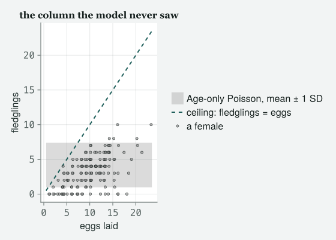
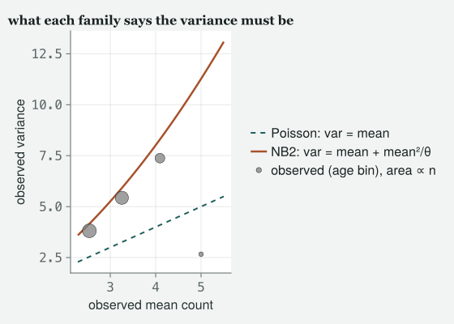
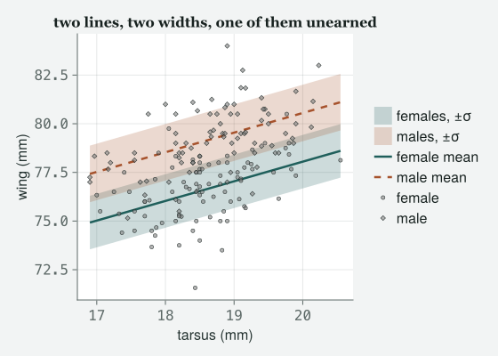
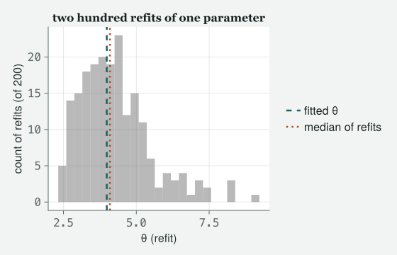

Class 3 let the family decree the spread. Today the decree turns out to be false — but only after the column nobody looked at has been ruled out, and the repair is then the same one verb in three families: a second formula in the box.
Draft
All ten classes of version 1 are drafted and their code runs end to end (1–10), with Appendix A, the preface and the coda. Every number and figure on this page was produced when the site was built; the book itself is not written.
Engines DRM.jl 0.7.1 at 26f4c4ddc (Julia 1.10.0) · drmTMB 0.7.0 (R 4.6.0) Provenance Every code block and printed result below was actually run when the site was built, and nothing is typed from memory. Every random draw is seeded where it is made, so the page comes out the same every time. Caveat The data are real: the 2012 Lundy Island female-breeding and sparrow-morphology records, read directly from data/2012/FemaleSuccess.csv and data/2012/MBodySize.csv (where the files came from is recorded in data/2012/README.md). Nothing here is simulated except the one block of invented refits at the end, which says so and carries its seed.
Objectives
By the end of this class you should be able to:
State, in one sentence, what a family decrees about the variance, and compare a crude variance-to-mean ratio against the ratio the fitted model actually implies, rather than against one.
Look for an exposure — a denominator already sitting in your data — before you blame the family, and say what an offset is.
Fit a grouped binomial and its overdispersed cousin BetaBinomial(), and say why n·p(1 − p) is a claim data can break where p(1 − p) is not.
Fit NegBinomial2(), say what the dispersion parameter θ means in the units of the variance, and predict what admitting the extra spread will and will not change: the estimate barely, the standard errors a lot.
Judge a ±1 SD band against the coverage — the share of data such a band is meant to hold — that the model itself claims for it.
Put a second formula on σ in a Gaussian model and report a not detected honestly — with the smallest difference the design could have seen. Then say why that is the same move as changing the family.
The class
Itchy’s office, 9:00 am. MOMO has arrived early with the fledgling file
already open, which is new. TOTO is eating breakfast and has not yet
decided to be here.
Itchy
Momo, you have been waiting a week to say something.
Momo
You told me my Poisson model was wrong, showed me exactly how wrong, and
then made me leave it wrong.
Itchy
I did, and today we fix it. Load it back.
# tools/diagnostics.jl includes tools/figures.jl, which includes# tools/theme_itchy.jl itself, so one include does all three.include("../tools/diagnostics.jl")usingDRM, DataFrames, CSV, Statistics, Random, Printf, CairoMakieimportDistributions# qualified: DRM exports its own Poisson, Binomial, …set_theme!(theme_itchy(:light))# confint(fit) returns one row per coefficient, each with .estimate, .lower and# .upper. This picks a row by block and name, so no table is ever read by column number.functionci_row(fit, block, name) rows =confint(fit; parm = block) rows[findfirst(r -> r.coef == name, rows)]endfemales = CSV.read("../data/2012/FemaleSuccess.csv", DataFrame)n_fem =nrow(females)m_counts =mean(females.Fledglings)v_counts =var(females.Fledglings)ratio_raw = v_counts / m_counts@printf("rows: %d columns: %s\n", n_fem, join(names(females), ", "))@printf("mean of the counts : %.4f\n", m_counts)@printf("variance of the counts : %.4f\n", v_counts)@printf("variance / mean : %.4f\n", ratio_raw)
rows: 163 columns: Fledglings, EggNo, Age
mean of the counts : 3.2086
variance of the counts : 5.4377
variance / mean : 1.6947
Momo
Same 163 females, same ratio of 1.69, which is still not one.
Itchy
Still not one. Hold on to that number and hold on to your annoyance with
it, because both are going to be worth less than you think by half past
nine. First, the thing that is genuinely different from last week. Toto,
in Class 3 the Gaussian model on a yes-or-no response was the wrong
shape. Its predictions were impossible. Is this one
impossible?
Toto
(mouth full) No. The counts it predicts are all positive and it
never predicts a half.
Itchy
For now. What is false is a claim the model never printed and you never
agreed to: the variance equals the mean. That is the
whole of today, and it has a name.
Three lines, and the third one is not something the Poisson family
estimated. It is something the Poisson family is. Now read the
third line carefully, because it has a bar in it that Momo’s crude ratio
does not.
pois =drm(bf(@formula(Fledglings ~ Age)), Poisson(); data = females)pois
Distributional regression fit (Poisson)
nobs = 163 logLik = -367.9932 converged = true
Mean model (μ):
H0: coefficient = 0
Coef. Std.Error z Pr(>|z|)
(Intercept) 0.7067 0.1081 6.5379 6.241e-11
Age 0.2325 0.0478 4.8667 1.135e-06
mu_p =fitted(pois)# What a CORRECT Poisson regression implies for the MARGINAL variance-to-mean ratio:# E[Var(y|x)] + Var(E[y|x]), all over E[y].ratio_implied = (mean(mu_p) +var(mu_p)) /mean(mu_p)@printf("crude, from the raw counts : %.4f\n", ratio_raw)@printf("what this fitted Poisson implies : %.4f\n", ratio_implied)@printf("what a Poisson decrees CONDITIONALLY : %.4f\n", 1.0)
crude, from the raw counts : 1.6947
what this fitted Poisson implies : 1.1491
what a Poisson decrees CONDITIONALLY : 1.0000
Momo
So the benchmark for my number was never one.
Itchy
The benchmark for your number was never one, and I let you believe it
was for a week. A Poisson regression says the variance equals
the mean at a given age. The raw counts also carry the
variation that age itself creates, so even a perfectly correct Poisson
model would show a marginal ratio — marginal meaning
averaged over every age, not held fixed at one — of 1.149 here, not one.
Compare like with like or you will convict an innocent
model. Your 1.69 is still too big — but against 1.149, not
against one, and the gap is smaller than you were told.
Toto
Then how do you check the thing with the bar in it?
Itchy
On the residuals of the fit, where age has already been taken out. Two
ways, built on different arithmetic. The classical one takes each bird’s
squared distance from its own fitted mean, divides by the variance the
model claims there, adds them up and divides by the residual
degrees of freedom. The other is the worm plot’s statistic from Class 3.
1.57 and 1.3, both well above one. Two checks, different arithmetic,
same verdict. Note that I did not call them independent: they
are two functions of one fitted model on one residual vector, and a pair
of checks that share a model can be wrong together.
Momo
Good. Give me the negative binomial.
Itchy
No.
Momo
You said we were fixing it today.
Itchy
We are. Open the file first. Not the model — the file.
Suspect the mean before you blame the family
n_under =count(females.Fledglings .<= females.EggNo)egg_lo, egg_hi =extrema(females.EggNo)@printf("rows where Fledglings <= EggNo : %d of %d\n", n_under, n_fem)@printf("EggNo runs from %d to %d, with SD %.2f\n", egg_lo, egg_hi, std(females.EggNo))
rows where Fledglings <= EggNo : 163 of 163
EggNo runs from 1 to 23, with SD 4.33
Itchy
Column two. EggNo, the number of eggs she laid.
Fledglings is at most EggNo in 163 of 163 rows
— which is to say all of them, because a female cannot fledge a chick
she did not lay. And EggNo runs from 1 to 23.
Momo
(silence)
Itchy
A female who laid 1 egg and a female who laid 23 are not being asked the
same question, and the model you have been carrying around for a week
asks them the same question. That is called an
exposure: an amount of opportunity that differs between
rows and belongs in the mean structure. Look at what the model believes
without it.
sd_p =sqrt.(mu_p)band_lo, band_hi =minimum(mu_p .- sd_p), maximum(mu_p .+ sd_p)# Jitter the eggs axis only, and only rightward, so that neither invariant this# figure is about can be broken by the jitter: no drawn point falls below zero# fledglings, and none is drawn above the ceiling.rng_jit =MersenneTwister(20260907)egg_jit = females.EggNo .+0.45.*rand(rng_jit, n_fem)fig =Figure(size = (560, 400))ax =Axis(fig[1, 1]; xlabel ="eggs laid", ylabel ="fledglings", title ="the column the model never saw")band!(ax, [egg_lo -0.5, egg_hi +0.5], fill(band_lo, 2), fill(band_hi, 2); color = (:grey, 0.28), label ="Age-only Poisson, mean ± 1 SD")lines!(ax, [egg_lo -0.5, egg_hi +0.5], [egg_lo -0.5, egg_hi +0.5]; linewidth =2, linestyle =:dash, label ="ceiling: fledglings = eggs")scatter!(ax, egg_jit, females.Fledglings; markersize =6, color = (:grey, 0.6), label ="a female")Legend(fig[1, 2], ax; framevisible =false)fig

Figure 1: Fledglings against eggs laid. Markers are jittered horizontally only, and only to the right, by up to 0.45 of an egg, so that repeated (eggs, fledglings) pairs separate; the vertical position is the exact count, so no marker can be drawn below zero or above the ceiling. The diagonal is that ceiling: no bird can sit above it. The horizontal band is everything the Age-only Poisson thinks is ordinary — its fitted mean ± 1 SD, over every female of every age — and it does not know that the ceiling exists, let alone where each bird’s own ceiling is.
Toto
The band goes straight through the line.
Itchy
The band goes straight through the line, and where it does, the model is
assigning ordinary probability to birds that cannot exist. Put a number
on it: for each female, ask the fitted Poisson how much probability it
puts above her own EggNo, and add those up.
over_pois =sum(1- Distributions.cdf(Distributions.Poisson(mu_p[i]), females.EggNo[i])for i in1:n_fem)@printf("expected rows with more fledglings than eggs, under this Poisson: %.2f\n", over_pois)
expected rows with more fledglings than eggs, under this Poisson: 8.88
Itchy
About 8.9 females’ worth of impossibility — which is why I said for
now rather than correct when Toto told me the predictions
were all legal. This model commits exactly the crime Class 3
convicted the Gaussian of, and it hid it better, because a
prediction of four chicks is only impossible if you know how many eggs
there were. Two words on the cell before we move:
sum(... for i in 1:n_fem) is a comprehension without its
square brackets, a generator, handed straight to
sum so nothing is stored on the way; and
Distributions.Poisson(...), written with its package name
in front, is the probability distribution, because a bare
Poisson() is DRM’s family and the two share a word. Now put
the exposure in.
Momo
As an offset. I have read ahead.
Itchy
As a covariate first, and I will tell you why in a minute. The right
scale is the log one, because the link is a log: if a female’s expected
brood is proportional to her eggs, then log μ carries log
EggNo with a coefficient of one. Adding the column is one
assignment — females.logEgg = log.(females.EggNo) writes a
new column into the frame, the dot taking the log of every egg count —
and the formula can then name it.
females.logEgg =log.(females.EggNo)poe =drm(bf(@formula(Fledglings ~ Age + logEgg)), Poisson(); data = females)poe
Distributional regression fit (Poisson)
nobs = 163 logLik = -323.4104 converged = true
Mean model (μ):
H0: coefficient = 0
Coef. Std.Error z Pr(>|z|)
(Intercept) -1.1695 0.2546 -4.5931 4.366e-06
Age 0.0852 0.0507 1.6798 0.09299
logEgg 0.9503 0.1102 8.6213 6.622e-18
mu_e =fitted(poe)X2_poe =sum((females.Fledglings .- mu_e) .^2./ mu_e)disp_poe = X2_poe /dof_residual(poe)d_aic_exposure =aic(pois) -aic(poe)egg =ci_row(poe, :mu, "logEgg") # the log(EggNo) row: estimate, lower, upperover_poe =sum(1- Distributions.cdf(Distributions.Poisson(mu_e[i]), females.EggNo[i])for i in1:n_fem)@printf("AIC, Age only : %.4f\n", aic(pois))@printf("AIC, Age + log(EggNo): %.4f (drop of %.4f for one parameter)\n",aic(poe), d_aic_exposure)@printf("Pearson X2/df : %.4f -> %.4f\n", disp_pois, disp_poe)@printf("log(EggNo) coefficient: %.4f [%.4f, %.4f]\n", egg.estimate, egg.lower, egg.upper)@printf("expected impossible rows: %.2f -> %.2f\n", over_pois, over_poe)
AIC, Age only : 739.9864
AIC, Age + log(EggNo): 652.8208 (drop of 87.1656 for one parameter)
Pearson X2/df : 1.5679 -> 1.1064
log(EggNo) coefficient: 0.9503 [0.7343, 1.1664]
expected impossible rows: 8.88 -> 0.63
Momo
That is a much bigger number than I was expecting.
Itchy
87.2 AIC, for one parameter, from a column that was already in
your file. The Pearson statistic falls from 1.57 to 1.11 — that
is most of the way to a met assumption — and the impossible mass falls
from about 8.9 birds to about 0.6. Now look at the coefficient itself,
because it is the answer to your offset question. It came out at 0.95,
with an interval of 0.73 to 1.17.
Toto
That interval contains one.
Itchy
That interval contains one, and an offset is precisely this
coefficient pinned at one instead of estimated. It is the
stronger, cheaper model when the proportionality really holds, and
fitting the coefficient free first is how you find out whether it does:
had it come back at a half, the offset would have been a bad model
confidently stated. Here the data have no complaint. This engine has no
offset term yet, so the free coefficient is the model we keep, which is
the one you should fit first in any case (Where the engine stops). Now the part
that should frighten you. Momo, what happened to your biology?
age_p =ci_row(pois, :mu, "Age")age_e =ci_row(poe, :mu, "Age")rr_naive =exp(age_p.estimate)rr_expos =exp(age_e.estimate)@printf("rate ratio on Age, Age only : %.4f [%.4f, %.4f]\n", rr_naive, exp(age_p.lower), exp(age_p.upper))@printf("rate ratio on Age, Age + log(EggNo) : %.4f [%.4f, %.4f]\n", rr_expos, exp(age_e.lower), exp(age_e.upper))
rate ratio on Age, Age only : 1.2618 [1.1490, 1.3857]
rate ratio on Age, Age + log(EggNo) : 1.0889 [0.9859, 1.2027]
Momo
It went from 1.26 to 1.09 and the interval covers one.
Itchy
It did. An extra year of age multiplied expected fledglings by 1.26 when
age was the only thing in the model, and by 1.09 once we allowed that
older females lay more eggs — and that second interval is consistent
with no effect at all per egg. Both statements are true and
they are about different things. The first is the total effect of age on
fledgling production; the second is what age does once you have
conditioned on the clutch. Neither is a lie. But if you had gone
straight to the negative binomial, you would have kept the first number,
an interval that excluded one, and a story about ageing females that was
mostly a story about eggs.
Toto
So the lesson is not about the family at all.
Itchy
The lesson today has a first half and a second half, and this is the
first half. Check the exposure before you blame the
family. Overdispersion is what a missing mean structure looks
like from the residuals, and a missing mean structure is much commoner
and much cheaper to fix.
The ceiling, taken seriously
Itchy
Second half. We got the impossible mass down to about 0.6 birds, which
is small, and I want it at zero, because it is zero in the world. What
stops it being zero is that we are still modelling a
count — a quantity with no upper limit written anywhere
— when the response is a count out of a known number of tries.
Toto
Chicks out of eggs.
Itchy
Chicks out of eggs. Toto, you fitted this family in Class 3, on a
response that was only ever zero or one. This is the same family with
the trials counted.
Distributional regression fit (Binomial)
nobs = 163 logLik = -333.1155 converged = true
Mean model (μ):
H0: coefficient = 0
Coef. Std.Error z Pr(>|z|)
(Intercept) -0.9542 0.1324 -7.2085 5.655e-13
Age 0.1175 0.0595 1.9752 0.04824
Momo
Two columns on the left.
Itchy
Two columns on the left: successes and failures, so the engine can count
the trials. And now the decree changes in a way that matters more than
it looks. In Class 3 I told you the binomial says the variance is p(1 −
p). For a single trial that is an identity — there is
nothing there for data to contradict, which is why Class 3’s logistic
diagnostic was a baseline rather than a test. For n trials the
variance is n·p(1 − p), and that extra factor is a real
claim: it says a female’s chicks succeed or fail independently of one
another. Test it.
Do not say that, and I am going to forbid the same move for AIC in about
twenty minutes, so let me forbid it here first. Those two statistics are
computed on different responses — at the same fitted
mean the binomial divides the same squared deviations by something
smaller, so it must come out bigger — and a Pearson statistic
is never compared across responses. Read 1.64 on its own terms: this
model already knows about the eggs, and its own variance claim is still
rejected by its own residuals. This is the overdispersion the
chapter is named for. A brood is not EggNo
independent coin flips: a good territory, a good mate or a good year
moves all of a female’s chicks together, and the binomial has no way to
say so. So free the variance, exactly as before — one verb, a second
formula in the box, a different family.
bbin =drm(bf(@formula(cbind(Fledglings, Failures) ~ Age), @formula(sigma ~1)),BetaBinomial(); data = females)bbin
Distributional regression fit (BetaBinomial)
nobs = 163 logLik = -319.6302 converged = true
Mean model (μ):
H0: coefficient = 0
Coef. Std.Error z Pr(>|z|)
(Intercept) -0.9677 0.1751 -5.5269 3.259e-08
Age 0.1241 0.0803 1.5461 0.1221
Scale model (log σ):
H0: coefficient = 0 on log σ
intercept ⇔ σ = 1 (unit-dependent); slope ⇔ equal dispersion
Coef. Std.Error z Pr(>|z|)
(Intercept) -1.2312 0.1440 -8.5491 1.24e-17
Momo
The σ table came back.
Itchy
The σ table came back, and that is the sentence I want you to leave the
room with. In Class 3 there was nothing to print because the family had
already spent the parameter. Say BetaBinomial() — or
NegBinomial2(), in a minute — and the family hands it back,
so the engine has something to estimate and something to print.
The absent table in Class 3 and the present table today are the
same fact seen from two sides. The beta-binomial lets each
female have her own success probability, drawn from a beta distribution
with mean p and precision φ. The σ slot carries that precision: the
engine reports log σ, and φ = 1/σ², so φ = exp(−2 log σ), which is the
first line of the next cell. θ will come out of the negative binomial’s
σ by the same arithmetic.
phi = 1 / sigma^2 : 11.7329
AIC, Binomial : 670.2311
AIC, BetaBinomial : 645.2604 (drop of 24.9706 for one parameter)
Pearson X2/df : 1.6417 -> 1.0160
Itchy
25.0 AIC for one parameter, and a Pearson statistic of 1.016, which is
where a met assumption sits — off a φ of 11.73, and the smaller φ is,
the more a female’s chicks move together rather than succeeding or
failing independently. And before anybody puts 645 next to
653: you may not. AIC compares models of the same
data, and “how many chicks did she fledge” and “how many of
these eggs hatched into fledglings” are different responses
with different likelihoods. The comparison you are allowed is binomial
against beta-binomial, and Poisson against Poisson.
Momo
How do I choose between the two responses, then?
Itchy
By what you are asking, not by AIC. If the biology is about production —
how many chicks come out of this female — model the count and put the
eggs in as an exposure. If it is about success rate given the
attempt, model the proportion, and then the ceiling is built in
rather than negotiated.
A band is not a promise that the dots are inside it
Itchy
Everybody draws mean ± 1 SD and then says “look, the dots are inside”.
Count them instead, and count them against what the model itself says
the answer should be.
# How many birds sit outside their own model's mean ± 1 SD, and how often does the# model itself expect a bird to sit inside? (Sum the fitted pmf over the band.)outside(y, m, v) =count(abs.(y .- m) .>sqrt.(v))functionclaimed_coverage(dists, m, v)mean(sum(Distributions.pdf(dists[i], k)for k in0:females.EggNo[i] ifabs(k - m[i]) <=sqrt(v[i]))for i ineachindex(dists))enddist_bin = [Distributions.Binomial(females.EggNo[i], p_bin[i]) for i in1:n_fem]dist_bb = [Distributions.BetaBinomial(females.EggNo[i], p_bb[i] * phi, (1- p_bb[i]) * phi) for i in1:n_fem]out_bin, out_bb =outside(females.Fledglings, m_bin, v_bin), outside(females.Fledglings, m_bb, v_bb)cov_bin, cov_bb =1- out_bin / n_fem, 1- out_bb / n_femclaim_bin, claim_bb =claimed_coverage(dist_bin, m_bin, v_bin), claimed_coverage(dist_bb, m_bb, v_bb)@printf("Binomial : %3d of %d outside -> coverage %.3f, model claims %.3f\n", out_bin, n_fem, cov_bin, claim_bin)@printf("BetaBinomial : %3d of %d outside -> coverage %.3f, model claims %.3f\n", out_bb, n_fem, cov_bb, claim_bb)
Binomial : 77 of 163 outside -> coverage 0.528, model claims 0.672
BetaBinomial : 56 of 163 outside -> coverage 0.656, model claims 0.670
Toto
So a lot of the birds are outside both bands.
Itchy
A lot of the birds are outside both bands, and that is not a
criticism — a ±1 SD band is not supposed to contain the data.
Its coverage is simply the share of birds it actually
holds, and the number to compare it with is the share the model says it
should hold. For these counts the binomial’s own band should hold about
0.67 of the birds and holds 0.53, a shortfall of 14 percentage points.
The beta-binomial claims 0.67 and delivers 0.66. Compare a band
with its own claim, never with your intuition about what a band should
hold. Now the plot from Class 3, on the repaired model.
Figure 2: A detrended worm plot of the beta-binomial fit: each randomised quantile residual minus the normal quantile it should have been, against that quantile, inside a pointwise ±2 SE envelope. A correct model gives a flat scatter about zero — not a diagonal — so read the horizontal line, not a 45° one.
Momo
From 1.29 down to 1.07.
Itchy
Near one, which is as much as the SD of 163 random draws can tell you;
the picture is the better judge. Put it next to the Poisson worm plot at
the end of Class 3, which left the envelope for most of its length in a
systematic S. A scattered few outside a pointwise envelope is
what an envelope is for; a long one-sided run down the plot is a
diagnosis.
Toto
But it is not flat. It sags on the left and bulges in the middle.
Itchy
It does, and the sag is where the few escaping points are: one short
stretch on the left flank. Report that as a shape rather than as a pass.
What it is not is the S that convicted the Poisson. Class 5 is where you
learn to count what is outside, and to decide whether a shape is a
finding.
Toto
So this model is right?
Itchy
This model has stopped complaining about the things I know how to ask
it, which is a much weaker sentence and the only one I am entitled to.
It still pretends these females are strangers to one another, and no
diagnostic on this file can see that, because the file does not record
who is who.
So where does the negative binomial come in
Itchy
Momo has been patient for the second time this morning. The negative
binomial is the repair everyone reaches for first, it is the one Class 3
promised you, and it deserves ten minutes rather than an hour. It
changes exactly one line of the decree:
Same first line, same second line, and a third line with a free
parameter in it. θ is estimated from the data like any other parameter,
and it buys the variance permission to exceed the mean. When θ is
enormous, μ²/θ vanishes and you are back in Class 3 with the Poisson.
When θ is small, the extra term dominates. θ is the price of the
lie, and the smaller it is the bigger the lie was — which is
backwards from what everybody expects, so say it out loud twice. Large
θ, tidy counts. Small θ, messy counts.
nb =drm(bf(@formula(Fledglings ~ Age), @formula(sigma ~1)),NegBinomial2(); data = females)nb
Distributional regression fit (NegBinomial2)
nobs = 163 logLik = -356.5665 converged = true
Mean model (μ):
H0: coefficient = 0
Coef. Std.Error z Pr(>|z|)
(Intercept) 0.7044 0.1441 4.8901 1.008e-06
Age 0.2337 0.0663 3.5235 0.000426
Scale model (log σ):
H0: coefficient = 0 on log σ
intercept ⇔ σ = 1 (unit-dependent); slope ⇔ equal dispersion
Coef. Std.Error z Pr(>|z|)
(Intercept) -0.6914 0.1520 -4.5487 5.397e-06
theta =exp(-2*coef(nb, :sigma)[1])d_aic_nb =aic(pois) -aic(nb)se_pois =stderror(pois)se_nb =stderror(nb)se_ratio = se_nb[2] / se_pois[2]quasi_ratio =sqrt(disp_pois)@printf("theta = 1 / sigma^2 : %.4f\n", theta)@printf("AIC, Poisson %.4f -> NB2 %.4f (drop of %.4f)\n", aic(pois), aic(nb), d_aic_nb)@printf("slope on Age : %.4f -> %.4f\n", coef(pois, :mu)[2], coef(nb, :mu)[2])@printf("its SE : %.4f -> %.4f (a factor of %.4f)\n", se_pois[2], se_nb[2], se_ratio)@printf("quasi-Poisson would have inflated it by sqrt(X2/df) = %.4f\n", quasi_ratio)
theta = 1 / sigma^2 : 3.9864
AIC, Poisson 739.9864 -> NB2 719.1331 (drop of 20.8533)
slope on Age : 0.2325 -> 0.2337
its SE : 0.0478 -> 0.0663 (a factor of 1.3880)
quasi-Poisson would have inflated it by sqrt(X2/df) = 1.2521
Itchy
θ is 3.99, the AIC drops by about 20.9 for one
parameter, the slope on age moves by nothing anybody would notice, and
the standard error goes up by a factor of 1.39. Toto,
name what just happened.
Toto
The Poisson was lying about the error bar, not the answer.
Itchy
Written on the board. Overdispersion is a disease of standard
errors — and it is not a coincidence, it is a theorem. The
equations a Poisson fit solves to find β have the right answer as their
solution, on average, whatever the true variance is, so the
estimate stays trustworthy even when the variance model is wrong; the
only thing the wrong variance corrupts is the standard error. Note the
direction, too: the Poisson model does not shrink the interval because
of overdispersion, it shrinks it because it refuses to admit the
overdispersion, which is the worst possible failure mode. Nobody rejects
a paper for being too confident.
Momo
And the quasi-Poisson? My old software offered me that.
Itchy
One line, and it is why Ver Hoef and Boveng are first on the reading
list. The quasi-Poisson keeps the Poisson mean and multiplies every
standard error by the square root of the Pearson statistic: 1.252 here,
against the negative binomial’s 1.388. They are close and they are not
the same, because they weight the birds differently — the quasi-Poisson
inflates every bird equally, the negative binomial downweights the
big-mean birds. On another dataset they disagree about which coefficient
matters.
Momo
The line above the σ table says σ = 1 is unit-dependent.
Itchy
For the Gaussian sparrows in twenty minutes it will be. Here σ is
dimensionless, σ = 1 means θ = 1, and the z on that row is a real test
of it, which rejects; the header is a habit of the engine, not a fact
about the family (Where the engine
stops).
Momo
Can I see the assumption itself rather than its consequences?
Itchy
You can, and this is the picture I would put in a lecture if I were
allowed only one. Bin the females by age, and for each bin plot the
observed mean against the observed variance. Then draw what each family
claims that relationship must be.
byage =combine(groupby(females, :Age), nrow =>:n,:Fledglings => mean =>:m,:Fledglings => var =>:v)sort!(byage, :Age)byage
4×4 DataFrame
Row
Age
n
m
v
Int64
Int64
Float64
Float64
1
1
65
2.53846
3.8149
2
2
59
3.25424
5.43425
3
3
32
4.09375
7.37802
4
4
7
5.0
2.66667
mgrid =collect(range(0.9*minimum(byage.m), 1.1*maximum(byage.m), length =100))fig =Figure(size = (560, 400))ax =Axis(fig[1, 1]; xlabel ="observed mean count", ylabel ="observed variance", title ="what each family says the variance must be")lines!(ax, mgrid, mgrid; linewidth =2, linestyle =:dash, label ="Poisson: var = mean")lines!(ax, mgrid, mgrid .+ mgrid .^2./ theta; linewidth =2.5, label ="NB2: var = mean + mean²/θ")scatter!(ax, byage.m, byage.v; markersize =3.*sqrt.(byage.n), color = (:grey, 0.75), label ="observed (age bin), area ∝ n")Legend(fig[1, 2], ax; framevisible =false)fig

Figure 3: Observed mean against observed variance, females binned by age, with marker area showing how many females are in each bin. The Poisson line is the identity; the negative-binomial curve bends above it, and how far it bends is set by 1/θ — the smaller θ, the further the curve climbs above the identity line.
# Count what the prose would otherwise assert, so the sentence cannot go stale.nb_curve = byage.m .+ byage.m .^2./ thetan_bins =nrow(byage)n_above =count(byage.v .> byage.m)n_nearer =count(abs.(byage.v .- nb_curve) .<abs.(byage.v .- byage.m))n_below_both =count((byage.v .< byage.m) .& (byage.v .< nb_curve))i_small =argmin(byage.n)@printf("bins above the identity line : %d of %d\n", n_above, n_bins)@printf("bins nearer the NB2 curve : %d of %d\n", n_nearer, n_bins)@printf("bins below both : %d of %d\n", n_below_both, n_bins)@printf("smallest bin: age %d, n = %d, mean %.3f, variance %.3f\n", byage.Age[i_small], byage.n[i_small], byage.m[i_small], byage.v[i_small])
bins above the identity line : 3 of 4
bins nearer the NB2 curve : 3 of 4
bins below both : 1 of 4
smallest bin: age 4, n = 7, mean 5.000, variance 2.667
Itchy
3 of the 4 bins sit above the line and 3 sit nearer the curve. 1 sits
below both, and before anybody builds a theory about it, look at how few
birds are in it: 7. A variance estimated from 7 numbers is a very
unstable thing. That point is not counter-evidence; it is the reason we
fit a model over all 163 females instead of eyeballing four dots, and it
is why the marker sizes are on the plot at all. A figure that hides its
sample sizes will let you believe anything.
Momo
So I should have used the negative binomial.
Itchy
Put it on top of the exposure model and find out.
nbe =drm(bf(@formula(Fledglings ~ Age + logEgg), @formula(sigma ~1)),NegBinomial2(); data = females)theta_e =exp(-2*coef(nbe, :sigma)[1])@printf("theta, Age only : %.4f\n", theta)@printf("theta, Age + log(EggNo) : %.4f\n", theta_e)@printf("AIC, Poisson + exposure : %.4f\n", aic(poe))@printf("AIC, NB2 + exposure : %.4f (difference %.4f)\n",aic(nbe), aic(nbe) -aic(poe))
theta, Age only : 3.9864
theta, Age + log(EggNo) : 29.2025
AIC, Poisson + exposure : 652.8208
AIC, NB2 + exposure : 654.1004 (difference 1.2796)
Itchy
θ goes from 4.0 to 29.2 — a number that large is the negative binomial
telling you it has nothing to do — and the extra parameter makes AIC
worse by about 1.3. The family repair earned about 21
AIC against a model with a missing covariate, and earns nothing at all
once the covariate is there. That is the whole of the first half
of today, in one comparison. The negative binomial is a good
family and it was not what was wrong.
The same move, in a family that never lied
Itchy
Right. Toto, you have been quiet, and you are about to see why this
chapter is not called “the negative binomial”.
Toto
Because you are going to do it to the sparrows.
Itchy
Because I am going to do it to the sparrows, and the sparrows have a
Gaussian response, where nobody ever said the variance
was a function of the mean. Load Class 2 back.
Two lines of housekeeping first, since you will do this to your own
files. ifelse.(raw.Sex .== "F", "female", "male") is the
dot on a three-argument function: for every row, if it is F
write female, else male. select(raw, :BirdID, ...) keeps
the named columns and drops the rest. Now: Class 2 fitted wing on tarsus
and sex, and printed a single residual standard deviation for every bird
on the island. Here is that model and here is the same model with a
second formula in the box.
Distributional regression fit (Gaussian)
nobs = 171 logLik = -301.6513 converged = true
Residual SD (response scale) varies with the σ model: 1.3757 to 1.4528 dof_residual = 166
Mean model (μ):
H0: coefficient = 0
Coef. Std.Error z Pr(>|z|)
(Intercept) 57.8574 2.6912 21.4985 1.609e-102
Tarsus 1.0097 0.1450 6.9630 3.332e-12
Sex: male 2.5015 0.2183 11.4614 2.063e-30
Scale model (log σ):
H0: coefficient = 0 on log σ
intercept ⇔ σ = 1 (unit-dependent); slope ⇔ equal dispersion
Coef. Std.Error z Pr(>|z|)
(Intercept) 0.3190 0.0750 4.2549 2.092e-05
Sex: male 0.0545 0.1083 0.5034 0.6147
Momo
That is the same shape of call as the beta-binomial.
Itchy
It is the identical shape of call, and that is the sentence this whole
class was built to earn. Three families, three very different-looking
problems, one verb and a second formula in the same
box. BetaBinomial() freed a variance the family
had pinned to n·p(1 − p). NegBinomial2() freed one
pinned to the mean. sigma ~ Sex frees one pinned to a
single number. Same constant, freed three times, from three directions.
Toto
And the header changed.
Itchy
Read it out. Where Class 2 printed one residual SD, this prints a
range, because with Sex in σ there is no
single number to print. This kind of model has a name —
location-scale: a formula on the mean, which is the
location, and a second formula on σ, which is the scale. Compute the
ends by hand once, so that the header means something to you.
s_hat =exp.(coef(fit_ls, :sigma))sigma_f = s_hat[1]sigma_m = s_hat[1] * s_hat[2]sd_range =extrema(sigma(fit_ls))@printf("sigma, females : %.4f mm\n", sigma_f)@printf("sigma, males : %.4f mm\n", sigma_m)@printf("constant-sigma model, one number : %.4f mm\n", sigma(fit_const)[1])@printf("location-scale model, the range : %.4f to %.4f mm\n", sd_range[1], sd_range[2])
sigma, females : 1.3757 mm
sigma, males : 1.4528 mm
constant-sigma model, one number : 1.4132 mm
location-scale model, the range : 1.3757 to 1.4528 mm
Itchy
Females scatter by about 1.38 mm around their line, males by about 1.45
mm. Males a little more, which is not what I would have
guessed. Now the verdicts. coef_se, from
tools/diagnostics.jl, hands back the standard error of one
named coefficient — the width of its own confidence interval, converted
back — so the next cell reads it the same way it reads the estimate.
g =ci_row(fit_ls, :sigma, "Sex: male") # log of the male/female sigma ratiose_g1 =coef_se(fit_ls, :sigma, "Sex: male")z_sex = g.estimate / se_g1p_sex =2* Distributions.ccdf(Distributions.Normal(), abs(z_sex))d_aic_sp =aic(fit_ls) -aic(fit_const)ratio_sex =exp(g.estimate)ratio_lo, ratio_hi =exp(g.lower), exp(g.upper)# Smallest sigma ratio this design could have detected at 80% power, alpha = 0.05.z_a = Distributions.quantile(Distributions.Normal(), 0.975)z_b = Distributions.quantile(Distributions.Normal(), 0.80)mdr =exp((z_a + z_b) * se_g1)@printf("AIC, constant sigma : %.4f\n", aic(fit_const))@printf("AIC, sigma ~ Sex : %.4f\n", aic(fit_ls))@printf("difference : %.4f (positive means the extra term did not pay)\n", d_aic_sp)@printf("\nsigma: Sex: male z = %.4f p = %.4f\n", z_sex, p_sex)@printf("male/female sigma ratio : %.4f [%.4f, %.4f]\n", ratio_sex, ratio_lo, ratio_hi)@printf("smallest ratio detectable at 80%% power : %.4f\n", mdr)
AIC, constant sigma : 611.5563
AIC, sigma ~ Sex : 613.3026
difference : 1.7464 (positive means the extra term did not pay)
sigma: Sex: male z = 0.5034 p = 0.6147
male/female sigma ratio : 1.0560 [0.8541, 1.3057]
smallest ratio detectable at 80% power : 1.3544
Toto
It got worse.
Itchy
AIC got worse by about 1.75, and the σ table’s own row agrees: a z of
0.5 and a p of 0.61. Now say what that means, carefully, because this is
where papers go wrong. The estimated ratio is 1.056 — males scattering
about 6% more — with an interval from 0.854 to 1.306. These birds are
consistent with males varying rather less than females and with males
varying rather more.
Momo
So the answer is not “no”.
Itchy
The answer is not detected, and the two are not the
same sentence. With 171 birds, the smallest ratio this design could have
caught four times out of five is 1.35. Anything smaller than that was
never going to show up, whether or not it is there. “We could
not tell them apart, and we could only have seen a 35% difference” is
the honest report; “the answer is no” is an accepted null wearing a lab
coat.
Momo
So one of your repairs worked and the other did not.
Itchy
One worked, one did not pay, and I am keeping both, because a chapter
where every experiment succeeds is teaching you a superstition. The
method is the same, the verdict is data, and the only thing that would
have been wrong was not asking. Look at what “did not pay” actually
looks like.
b =coef(fit_ls, :mu) # [intercept, Tarsus, Sex: male]; female is the baselinetg =collect(range(minimum(sparrows.Tarsus), maximum(sparrows.Tarsus), length =100))mu_f = b[1] .+ b[2] .* tgmu_m = b[1] .+ b[2] .* tg .+ b[3]is_m = sparrows.Sex .=="male"fig =Figure(size = (560, 400))ax =Axis(fig[1, 1]; xlabel ="tarsus (mm)", ylabel ="wing (mm)", title ="two lines, two widths, one of them unearned")# Bands and lines share one colour per sex (accent = female, warn = male) so a# reader can match a band to its line by hue, not only by which one sits# higher; the near-equal alpha keeps the WIDTH comparison — the point of this# figure — the thing that reads as similar, not the shading. Data drawn LAST# so no bird is ever painted over by the model on top of it.band!(ax, tg, mu_f .- sigma_f, mu_f .+ sigma_f; color = (LIGHT.accent, 0.22), label ="females, ±σ")band!(ax, tg, mu_m .- sigma_m, mu_m .+ sigma_m; color = (LIGHT.warn, 0.22), label ="males, ±σ")lines!(ax, tg, mu_f; linewidth =2.5, color = LIGHT.accent, label ="female mean")lines!(ax, tg, mu_m; linewidth =2.5, linestyle =:dash, color = LIGHT.warn, label ="male mean")scatter!(ax, sparrows.Tarsus[.!is_m], sparrows.Wing[.!is_m]; markersize =6, color = (:grey, 0.6), label ="female")scatter!(ax, sparrows.Tarsus[is_m], sparrows.Wing[is_m]; markersize =6, marker =:diamond, color = (:grey, 0.6), label ="male")Legend(fig[1, 2], ax; framevisible =false)fig

Figure 4: Wing on tarsus, with a ±1σ band per sex from the location-scale fit. The bands differ, and not by enough to earn their parameter — nor by enough for this design to have detected the difference if it were real.
Itchy
Two bands of very nearly the same width. That picture is what a p of
0.61 looks like before anybody computes a p, and you should learn to see
it, because the picture is available to you before the test is.
Toto
So when is modelling σ worth it?
Itchy
When the spread is genuinely a function of something you measured, and
that is a chapter of its own — rung 11, modelling the spread
itself, which is held for version two of this book. Today you
have seen the syntax and one honest not-detected, which is the right
amount for a Tuesday. Class 5 is next and is about nothing but
diagnostics, which is where the worm plot and the coverage arithmetic
get done properly. And every model on this page is still fixed effects
only. Class 6 is where rows stop being strangers, on a file that records
who is who.
Summary
Stats stuff
Compare like with like. A Poisson regression decrees Var(y | x) = μ(x); it says nothing about the variance-to-mean ratio of the raw counts, which also carries the variation the predictors create. Here the raw ratio is 1.69 and a perfectly correct Poisson would still imply 1.15. Check overdispersion on residuals, not on the marginal moments.
Look for an exposure before you blame the family. A denominator sitting unused in your data is the commonest cause of “overdispersion” and the cheapest to fix: here log(EggNo) bought about 87 AIC for one parameter and moved the age rate ratio from 1.26 to 1.09, interval covering one. A missing covariate and a wrong variance function look identical in a residual plot.
An offset is a covariate with its coefficient pinned at one. Fit it free first: if the interval covers one, the offset is the better model; if it does not, the offset would have been a confident mistake.
Successes out of trials is not a count. For n > 1 the binomial variance is n·p(1 − p), a real claim — the trials within a row are independent — that data can break. For n = 1 it is an identity, which is why Class 3’s logistic diagnostic could not fail.
The beta-binomial frees that claim with one parameter, as the negative binomial frees Var = μ with θ. Here it bought about 25 AIC and took the Pearson statistic from 1.64 to 1.02.
AIC compares models of the same response. Counts and proportions-out-of-a-denominator are different data; choose between them by the question you are asking, not by the smaller number. The same goes for a Pearson statistic.
Overdispersion is a disease of standard errors, and that is a theorem. The Poisson point estimate stays trustworthy whatever the true variance; only its standard error was wrong, here by a factor of 1.39, against the quasi-Poisson’s 1.25 — close, not identical, because the two weight observations differently.
Judge a band against its own claim. A ±1 SD band is not supposed to contain the data. Ask the model what coverage it claims and compare: 0.53 against 0.67 for the binomial, 0.66 against 0.67 for the beta-binomial.
“Not detected” is not “no”. The sparrows’ σ ratio is 1.06 with an interval of 0.85 to 1.31, and the smallest ratio this design could have caught at 80% power is 1.35. Report the interval and the detectable size, not a verdict.
A model comparison that goes against you is a result. The counts earned their beta-binomial parameter and the sparrows lost their σ term by about 1.7 AIC. Reporting only the one that worked is how a literature goes wrong.
Plot the assumption, not only its consequences. Mean against variance, binned, with the family’s claim drawn as a curve and marker area showing sample size.
What this chapter still pretends. Every model here treats its rows as strangers, and these files cannot stop it: FemaleSuccess.csv carries no female identifier, and MBodySize.csv is one row per bird. Class 6 ends the pretence on a file that repeats birds, and the standard errors printed here will move when it does.
Julia you used
df.logEgg = log.(df.EggNo). Assigning to a column that does not exist creates it. The dot takes the log of every element.
sum(f(i) for i in 1:n). A generator: a comprehension without its square brackets, consumed as it goes. sum(... for k in 0:n if cond) filters it with an if, and a second for nests one inside another.
ifelse.(cond, a, b). The dot on a three-argument function: for each element, a where the condition holds, otherwise b.
.&, .|, .!.And, or and not, element by element, for combining true/false vectors; count(v) counts the trues.
import Distributions and Distributions.Poisson(μ). A package loaded without its names spilled into yours, so DRM’s Poisson() family and the distribution can coexist; the dot after the package name reaches inside it.
findfirst(r -> r.coef == name, rows). The position of the first element for which the function is true; argmin(v) is the position of the smallest value.
function refit_pair(y) ... (a, b) end. A function returning two values as a pair; first.(pairs) and last.(pairs) split a vector of pairs into two vectors.
join(names(df), ", "). Glues strings together with a separator.
sort!(byage, :Age). The ! again: sorts the frame in place.
Calls you used
drm(bf(@formula(cbind(k, n - k) ~ x)), Binomial(); data = df): a grouped binomial; cbind is DRM’s own marker for successes and failures, not R’s function.
drm(bf(@formula(y ~ x), @formula(sigma ~ 1)), BetaBinomial(); data = df) and NegBinomial2(): the overdispersed versions, with the second formula in the box. coef(fit, :sigma) is log σ, and φ or θ is exp(-2 * coef(fit, :sigma)[1]).
drm(bf(@formula(y ~ x + g), @formula(sigma ~ g)), Gaussian(); data = df): a location-scale fit; exp.(coef(fit, :sigma)) for millimetres.
sigma(fit), dof_residual(fit), stderror(fit): response-scale σ per observation, residual degrees of freedom for a Pearson statistic, and standard errors in coefficient order.
confint(fit; parm = :sigma): one row per coefficient of that block, each with .estimate, .lower, .upper on the link scale; ci_row above picks a row by name. coef_se(fit, block, name), from tools/diagnostics.jl, reads that coefficient’s standard error off the same interval’s width.
residuals(fit; type = :quantile, rng = MersenneTwister(seed)): as before. Which rng you pass moves the SD’s second decimal, so do not read its digits.
markersize = 3 .* sqrt.(n) in a binned plot: area, not radius, is what the eye reads.
The simulation thread. Ask the negative-binomial fit to invent two hundred new sets of females, refit each, and watch which parameter is well pinned down and which is not.
# Draw new counts from the fitted NB2 model, refit the same model to each,# and collect two things: the slope on Age, and the dispersion theta.rng_sim =MersenneTwister(20260907)ysim =simulate(nb; nsim =200, rng = rng_sim)functionrefit_pair(y) d =DataFrame(Fledglings = y, Age = females.Age) f =drm(bf(@formula(Fledglings ~ Age), @formula(sigma ~1)),NegBinomial2(); data = d) (coef(f, :mu)[2], exp(-2*coef(f, :sigma)[1]))endpairs_out = [refit_pair(ysim[:, k]) for k in1:size(ysim, 2)]slopes =first.(pairs_out)thetas =last.(pairs_out)@printf("slope on Age : fitted %.4f, reported SE %.4f\n", coef(nb, :mu)[2], se_nb[2])@printf(" refits: mean %.4f, SD %.4f\n", mean(slopes), std(slopes))@printf("\ntheta : fitted %.4f\n", theta)@printf(" refits: mean %.4f, median %.4f, SD %.4f\n",mean(thetas), median(thetas), std(thetas))@printf(" refits: 10th pct %.4f, 90th pct %.4f, max %.4f\n",quantile(thetas, 0.1), quantile(thetas, 0.9), maximum(thetas))
slope on Age : fitted 0.2337, reported SE 0.0663
refits: mean 0.2361, SD 0.0678
theta : fitted 3.9864
refits: mean 4.2842, median 4.0946, SD 1.2401
refits: 10th pct 2.8967, 90th pct 5.9290, max 9.2220
The numbers above say “strongly asymmetric” several ways; here is the shape itself, so you can see it rather than assemble it from percentiles.
fig =Figure(size = (560, 360))ax =Axis(fig[1, 1]; xlabel ="θ (refit)", ylabel ="count of refits (of 200)", title ="two hundred refits of one parameter")hist!(ax, thetas; bins =25, color = (:grey, 0.55))vlines!(ax, [theta]; linewidth =2.5, linestyle =:dash, color = LIGHT.accent, label ="fitted θ")vlines!(ax, [median(thetas)]; linewidth =2.5, linestyle =:dot, color = LIGHT.warn, label ="median of refits")Legend(fig[1, 2], ax; framevisible =false)fig

Figure 5: The sampling distribution of θ across the 200 parametric refits: two hundred counts of a single fitted parameter, from data the fitted model itself generated. The dashed line marks the θ the one real fit reported; the dotted line marks the median of the 200 refits. A symmetric standard error would draw a bell centred on the dashed line — this is not that.
refit_pair is Class 3’s refit function returning two things at once, a pair in brackets, and first.(pairs_out) and last.(pairs_out) pull the two halves apart with the dot on a function: one vector of slopes, one of thetas. The slope behaves itself: the spread of refitted slopes lands close to the standard error the single fit reported, which is what a standard error promises. θ does not. Its refits are strongly asymmetric — the mean printed above sits higher than the median, the largest refit is 2.3 times the estimate, and the tenth and ninetieth percentiles are nowhere near symmetric about 3.99. So quote θ to one decimal, and prefer an interval read off the likelihood itself to the plain estimate-plus-or-minus-two-standard-errors kind — the Wald interval, which assumes the uncertainty is the same size on both sides. Appendix A takes that apart properly.
Further reading
Graded by depth. Details checked on 2026-09-07 against OpenAlex, an open
catalogue of research papers.
Ver Hoef, J. M. & Boveng, P. L. (2007) “Quasi-Poisson vs. negative binomial regression: how should we model overdispersed count data?”, Ecology 88:2766–2772. doi:10.1890/07-0043.1. Start here, and read it before you choose. It sets the negative binomial against the other standard repair, the quasi-Poisson, and the difference is not cosmetic: they weight observations differently, so they can disagree about which coefficient matters. This class computed both inflation factors in one line; the paper is why they are not the same number.
Lindén, A. & Mäntyniemi, S. (2011) “Using the negative binomial distribution to model overdispersion in ecological count data”, Ecology 92:1414–1421. doi:10.1890/10-1831.1. The ecologist’s companion to the equation on the board, and the paper that would have caught Momo’s first mistake: its abstract is about the mechanisms that generate overdispersion — sampling, flocking, aggregation, environmental variability — which is exactly the question “is the family wrong, or is something missing from the mean?”.
Harrison, X. A. (2014) “Using observation-level random effects to model overdispersion in count data in ecology and evolution”, PeerJ 2:e616. doi:10.7717/peerj.616. The repair this chapter deliberately did not use, because it needs machinery from Class 6. Read it after Class 6 and then come back: it is a third route to the same problem, and knowing three routes is what stops you believing any one of them is the definition of the problem.
Rigby, R. A. & Stasinopoulos, D. M. (2005) “Generalized additive models for location, scale and shape”, Journal of the Royal Statistical Society Series C 54:507–554. doi:10.1111/j.1467-9876.2005.00510.x. The framework the last part of this class belongs to, and where rung 11 goes. This is the paper that says out loud that every parameter of a distribution can have a linear predictor, not only the mean. Long, and the introduction alone repays the afternoon.
Hilbe, J. M. (2011) Negative Binomial Regression, 2nd edition, Cambridge University Press. doi:10.1017/cbo9780511973420. The reference book, for when you need the parameterisation you were handed rather than the one you like. Own it if counts are your day job; borrow it otherwise, and read the chapters on model selection and on the varieties of negative binomial.
Exercises
Graded by depth: the first three take ten minutes each. Every exercise names a file under data/ that exists; do it on your own organism as well where you have one. A check is a number computed from that file when this page was built — match it before going on. For every question, paste your code and then explain in your own words what each line does, as if to somebody who has done Class 3 and not Class 4.
Read the file before the model.data/2012/EPPSuccess.csv records, for 76 male sparrows, EPP, the number of extra-pair young each sired, and his Age in years. Before fitting anything, answer for each column other than EPP: predictor, exposure, or neither? An exposure is anything that changes how much opportunity a row had — area searched, hours observed, eggs laid, individuals at risk. Then say what column this file would need for an exposure to be payable, and compute the variance-to-mean ratio of EPP as the crude sign of what is coming. Check: the ratio is 5.05.
Pay the price. Fit EPP ~ Age with Poisson(), then with NegBinomial2() and @formula(sigma ~ 1) in the box. Report the coefficient on Age, its standard error and the rate ratio under each family in a four-row table, and report θ. Then write one sentence naming what changed and one naming what did not. Check: θ = 0.391; AIC drops by 76.1 for one parameter; the standard error grows by a factor of 2.62; the rate ratio moves from 2.05 to 2.84, which is the part the chapter did not warn you about.
The referee. For the repair you kept in question 2, report the AIC difference. Then answer: if it had gone the other way, what would you have done, and would you have reported the comparison at all? Two sentences, and be honest in the second one.
Out of how many?data/2012/SparrowSurvival.csv has one row per chick, and on each row the brood’s HatchingSuccess (eggs that hatched) and EggNo (eggs laid). Two things this chapter has not needed: the file marks missing values two ways, so read it with missingstring = ["NA", ""], and drop rows with holes in the three columns you need with dropmissing(df, [:HatchingSuccess, :EggNo, :JulianDate]); Classes 6 and 9 explain them. Then collapse to one row per brood with combine(groupby(df, :BroodNo), :HatchingSuccess => first => :hatched, :EggNo => first => :eggs, :JulianDate => first => :date), and fit hatching success as cbind(hatched, eggs - hatched) on date with Binomial(), then with BetaBinomial(). Report both AICs, the Pearson X²/df under the binomial, and φ. Then answer in one sentence why you may not compare either AIC with the count models of question 2. Check: 544 broods; X²/df = 1.34 under the binomial; φ = 8.26; the beta-binomial’s AIC is lower by 35.6.
The same move on mass. On data/2012/MBodySize.csv fit Weight ~ Tarsus + Sex, then add @formula(sigma ~ Sex) to the box. Report both AICs, the z and p on the σ slope row, the σ ratio with its interval, and the smallest ratio this sample could have detected at 80% power, exp((1.96 + 0.84) * se). Then write the result as a “not detected, and we could only have seen X” sentence rather than a “no”. Check: the male-to-female σ ratio is 0.94, interval 0.76 to 1.17; the extra parameter raises AIC by 1.7; the smallest detectable ratio is 1.35.
The two faces. Write one paragraph, no code, explaining to a labmate why BetaBinomial(), NegBinomial2() and sigma ~ x are the same move. Your paragraph must contain the phrase “held fixed” and must name what is held fixed in each case. Check: there are three answers to “what is held fixed”, and questions 2, 4 and 5 each produced one of them.